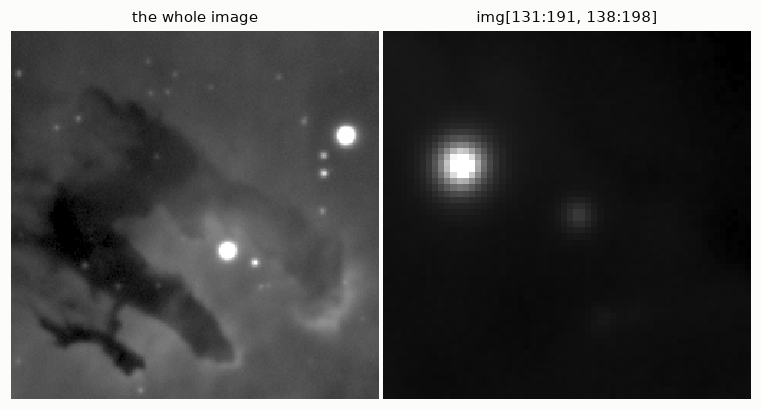
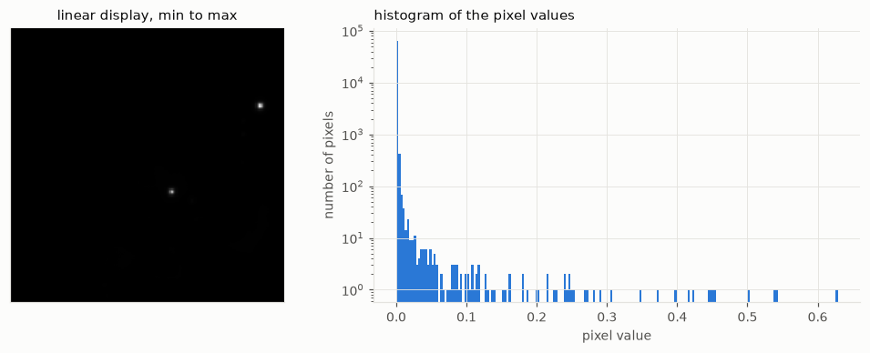
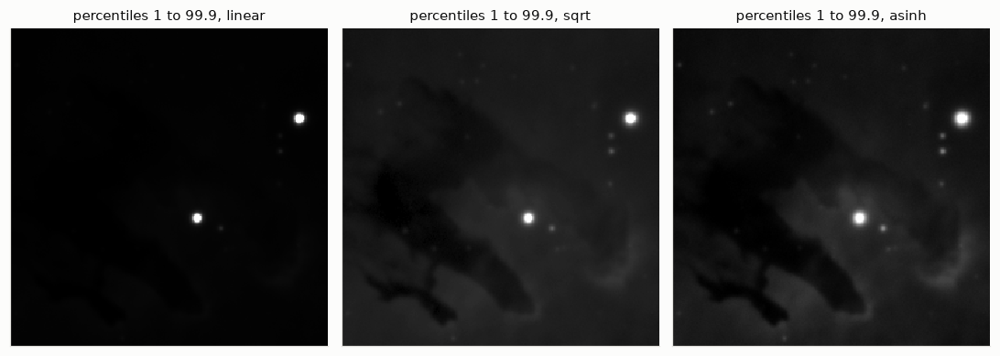
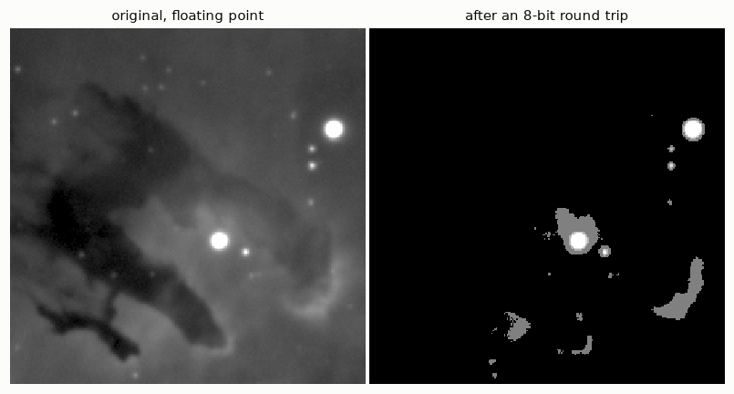
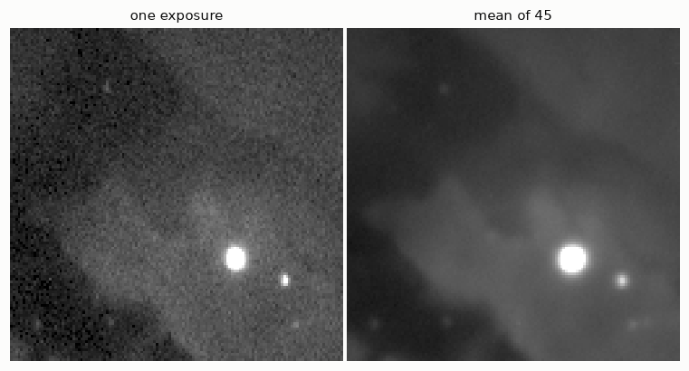
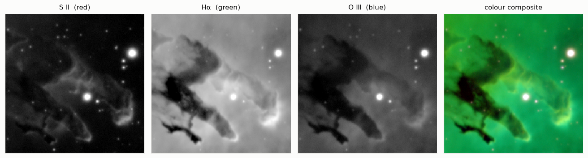

import os, tempfile
import numpy as np
import matplotlib.pyplot as plt
import hnotools as hno
hno.style()
data = hno.load_sample()2 Images as arrays
Companion notebook to Hansen, Nagy & O’Leary, Deblurring Images, chapter 2. The chapter shows how to handle images in MATLAB. This notebook covers the same ground with NumPy, and you can read it instead of the chapter.
What you will take away
- An image is an array of numbers. Its shape, its data type and its index order are things you must always know.
- Displaying an image and computing with it are different jobs. What you see on screen has been stretched; the numbers must stay untouched.
- Integer types silently give wrong answers. Convert to floating point first.
- Simple arithmetic on images already does useful science: averaging, differencing, measuring noise, masking.
2.1 An image is an array
Our working image is the average of 45 five-minute exposures of the Pillars of Creation through an oxygen filter, taken with a 14 cm refractor.
img = data['mean'].astype(float)
print('type :', type(img).__name__)
print('shape:', img.shape, ' (rows, columns)')
print('dtype:', img.dtype)
print(f'values from {img.min():.4f} to {img.max():.4f}, median {np.median(img):.5f}')type : ndarray
shape: (256, 256) (rows, columns)
dtype: float64
values from -0.0003 to 0.6288, median 0.00075Three conventions to fix in your mind, because every bug in image code comes from one of them.
- Index order is
[row, column], that is[y, x], not[x, y]. - Row 0 is at the top when displayed, as in a matrix, not at the bottom as on a graph.
- Slices are half-open:
img[100:160]takes rows 100 to 159.
Cropping is slicing:
crop = img[131:191, 138:198] # 60 rows, 60 columns around a bright star
row, col = np.unravel_index(np.argmax(crop), crop.shape)
print('crop shape:', crop.shape, ' brightest pixel at row', row, 'column', col, 'of the crop')
hno.show([img, crop], ['the whole image', 'img[131:191, 138:198]'], width=3.4);crop shape: (60, 60) brightest pixel at row 21 column 12 of the crop
A slice is a view, not a copy: modifying crop would modify img. Write img[131:191, 138:198].copy() when you want an independent array.
2.2 What you see is not what you have
hno.show made the nebula visible. Here is the same array displayed honestly, black for the smallest value and white for the largest:
fig, ax = plt.subplots(1, 2, figsize=(9, 3.6), gridspec_kw={'width_ratios': [1, 1.5]})
ax[0].imshow(img, vmin=img.min(), vmax=img.max()); ax[0].grid(False)
ax[0].set_xticks([]); ax[0].set_yticks([]); ax[0].set_title('linear display, min to max')
ax[1].hist(img.ravel(), bins=200, color=hno.BLUE, log=True)
ax[1].set_xlabel('pixel value'); ax[1].set_ylabel('number of pixels')
ax[1].set_title('histogram of the pixel values', loc='left')
fig.tight_layout()
p1, p99 = np.percentile(img, [1, 99])
print(f'99 % of the pixels lie between {p1:.4f} and {p99:.4f}: {(p99 - p1) / (img.max() - img.min()):.1%} of the full range')99 % of the pixels lie between -0.0001 and 0.0029: 0.5% of the full range
Two stars and nothing else. The nebula is all there, but it occupies less than one percent of the range of values, squeezed against zero. Astronomical images have an enormous dynamic range, and a screen does not.
To look at such an image we stretch it: we choose which values become black and white, and how the values in between are spread. Three common choices:
def stretch(a, lo, hi, kind='linear'):
"""Map values lo..hi to 0..1 for display. Returns a NEW array."""
z = np.clip((a - lo) / (hi - lo), 0, 1)
if kind == 'sqrt':
z = np.sqrt(z)
elif kind == 'asinh':
z = np.arcsinh(30 * z) / np.arcsinh(30)
return z
lo, hi = np.percentile(img, [1, 99.9])
fig, ax = plt.subplots(1, 3, figsize=(10, 3.6))
for a, kind in zip(ax, ('linear', 'sqrt', 'asinh')):
a.imshow(stretch(img, lo, hi, kind), vmin=0, vmax=1); a.grid(False)
a.set_xticks([]); a.set_yticks([]); a.set_title(f'percentiles 1 to 99.9, {kind}')
fig.tight_layout()
The three panels show the same array. None is more “true” than the others. The stretch is a choice made for the eye, and it should never leak into the numbers.
Why it matters: measure a star on stretched data and you are wrong
The width of a star image, its full width at half maximum (FWHM), is the standard measure of sharpness. Let us measure it on a synthetic star whose width we know, before and after a square-root stretch.
def fwhm_by_area(a):
"""FWHM of a single round blob: diameter of the disc of pixels above half maximum."""
return 2 * np.sqrt(np.sum(a >= 0.5 * a.max()) / np.pi)
star = hno.moffat_psf((513, 513), 40.0, beta=2.5) # a wide star, so that pixels are small
print(f'true FWHM : 40.0')
print(f'measured, linear data: {fwhm_by_area(star):.1f}')
print(f'measured, sqrt data : {fwhm_by_area(np.sqrt(star)):.1f}')true FWHM : 40.0
measured, linear data: 40.0
measured, sqrt data : 60.9Fifty percent too wide. The half maximum of the stretched star is not the half maximum of the star. An early version of our own study compared two telescopes on stretched images and got widths wrong by a factor of two; the mistake was found only when the measurement was redone on linear data.
Rule: stretch for the eye, compute on the linear data.
2.3 Data types: integers lie
Image files usually store integers: 8 bits (0 to 255) for ordinary pictures, 16 bits (0 to 65 535) for cameras. NumPy keeps that type when it reads them, and integer arithmetic wraps around without warning:
a = np.array([200, 100, 50], dtype=np.uint8)
b = np.array([100, 100, 100], dtype=np.uint8)
print('a + b =', a + b, ' (200 + 100 should be 300)')
print('a - b =', a - b, ' (50 - 100 should be -50)')
print('as floats:', a.astype(float) + b, a.astype(float) - b)a + b = [ 44 200 150] (200 + 100 should be 300)
a - b = [100 0 206] (50 - 100 should be -50)
as floats: [300. 200. 150.] [100. 0. -50.]No error, no warning, wrong numbers. Convert to floating point as soon as you have read an image: img = img.astype(float).
The second danger of integers is quantisation. Let us save our image as an 8-bit PNG, as one would for a web page, and read it back.
tmp = os.path.join(tempfile.mkdtemp(), 'nebula.png')
plt.imsave(tmp, img, cmap='gray', vmin=img.min(), vmax=img.max()) # linear, 8 bits
back = plt.imread(tmp)[:, :, 0].astype(float) # values k/255
back = back * (img.max() - img.min()) + img.min() # same units as img
levels = (p99 - p1) / (img.max() - img.min()) * 255
print(f'the nebula (99 % of the pixels) spans {levels:.1f} grey levels out of 255')
hno.show([img, back], ['original, floating point', 'after an 8-bit round trip'], width=3.6);the nebula (99 % of the pixels) spans 1.2 grey levels out of 255
The whole nebula had to fit in about one grey level, and it is gone. This is why astronomers store images as 16-bit or floating-point FITS files, never as PNG or JPEG. (In Python, FITS files are read with the astropy package; our sample is stored as a NumPy .npz archive to keep the setup small.)
2.4 Arithmetic on images
With floating-point arrays, image arithmetic is array arithmetic. Three examples that we will use again and again.
Averaging exposures. data['cube'] holds all 45 exposures of the central part of the field, as an array of shape (45, 128, 128).
cube = data['cube'].astype(float)
one = cube[0]
mean45 = cube.mean(axis=0) # average along the first axis: over the exposures
hno.show([one, mean45], ['one exposure', 'mean of 45'], same_scale=True, width=3.4);
Measuring noise by differencing. The sky does not change between two exposures, so their difference contains no sky: only noise. If each exposure has noise \(\sigma\), the difference has noise \(\sigma\sqrt{2}\).
The same trick measures the noise of the average: split the exposures in two halves, average each, and take half the difference of the two averages.
We estimate the spread with the median absolute deviation (MAD) rather than the standard deviation, because stars are not noise and a few bright pixels would dominate a standard deviation.
def robust_sigma(a):
"""Standard deviation estimated from the median absolute deviation."""
return 1.4826 * np.median(np.abs(a - np.median(a)))
sigma_one = robust_sigma(cube[0] - cube[1]) / np.sqrt(2)
sigma_mean = robust_sigma(cube[0::2].mean(axis=0) - cube[1::2].mean(axis=0)) / 2
print(f'noise of one exposure : {sigma_one:.2e}')
print(f'noise of the mean : {sigma_mean:.2e}')
print(f'ratio : {sigma_one / sigma_mean:.1f} (sqrt(45) = {np.sqrt(45):.1f})')noise of one exposure : 2.69e-04
noise of the mean : 4.01e-05
ratio : 6.7 (sqrt(45) = 6.7)Averaging \(N\) exposures divides the noise by about \(\sqrt{N}\). This is the whole reason for taking many exposures, and this “split in two halves” test is how our project puts error bars on its results.
Masks. A comparison gives an array of booleans, which selects pixels.
saturated = one > 0.5 * one.max() # the camera clipped these pixels
print('saturated pixels in this exposure:', saturated.sum())
print(f'median of the sky, stars excluded: {np.median(one[~saturated]):.2e}')saturated pixels in this exposure: 5
median of the sky, stars excluded: 9.12e-042.5 Colour images
A colour image is three images stacked along a third axis: shape (rows, columns, 3), in the order red, green, blue.
Our telescope camera is monochrome. We photograph the nebula three times through narrow filters that isolate the light of sulphur (S II), hydrogen (H\(\alpha\)) and oxygen (O III), and assign them to red, green and blue. This is the “Hubble palette” of the famous picture.
sho = data['mean_sho'].astype(float) # shape (3, 256, 256): S II, H-alpha, O III
print('stored as', sho.shape)
rgb = np.stack([stretch(c, *np.percentile(c, [1, 99.8]), 'asinh') for c in sho], axis=-1)
print('for display', rgb.shape, ' values', rgb.min(), 'to', rgb.max())
fig, ax = plt.subplots(1, 4, figsize=(12, 3.3))
for a, c, name in zip(ax, sho, ('S II (red)', 'Hα (green)', 'O III (blue)')):
a.imshow(stretch(c, *np.percentile(c, [1, 99.8]), 'asinh'), vmin=0, vmax=1); a.set_title(name)
ax[3].imshow(rgb); ax[3].set_title('colour composite')
for a in ax:
a.set_xticks([]); a.set_yticks([]); a.grid(False)
fig.tight_layout()stored as (3, 256, 256)
for display (256, 256, 3) values 0.0 to 1.0
imshow expects a colour array of floats between 0 and 1, which is why each channel was stretched separately before stacking. The result is green almost everywhere, because hydrogen is by far the brightest gas in this nebula. Published pictures rebalance the three channels to taste: the colours are a display choice too. Chapter 7 comes back to colour, where each channel has its own blur.
Your turn
- Index order. Without running it, say what
img[10, 200],img[:, 0]andimg[::2, ::2]are. Check the shape of each. - View or copy? Set
c = img[0:5, 0:5], thenc[:] = 0. Look atimg[0, 0]. Reload the data and repeat with.copy(). - Sixteen bits. In section 2.3, how many levels would the nebula get in a 16-bit file? Compare that step with the noise of one exposure measured in section 2.4. Is 16 bits enough for a single exposure? For the mean of 45?
- Stretch and width. Redo the star measurement of section 2.2 with the
asinhstretch. Then explain, with the formula of the Moffat profile inhnotools.py, why the square-root stretch gives exactly this factor. - Noise in practice. Compute
robust_sigma(cube[i] - cube[i + 1])for all consecutive pairs and plot it againsti. Did every exposure have the same noise? What could make one night noisier than another?